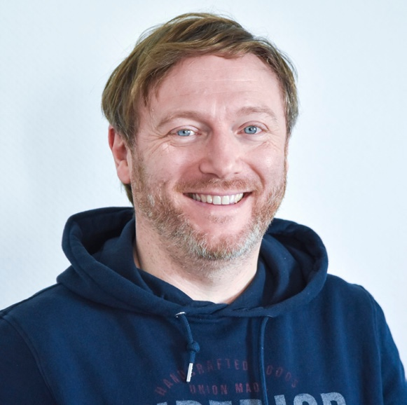
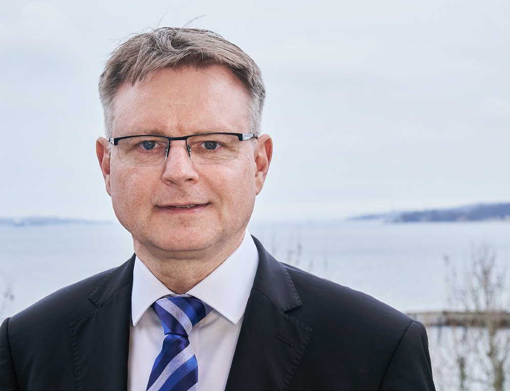
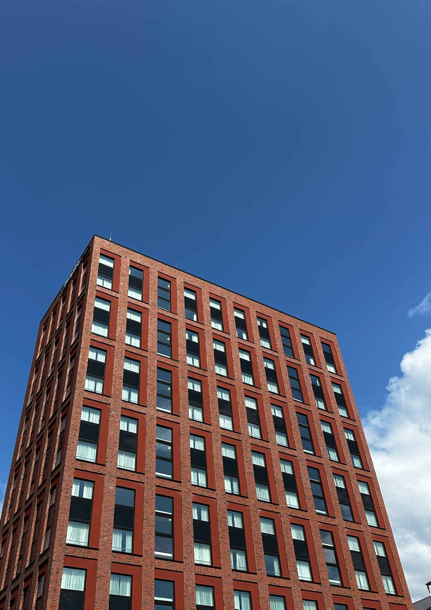

Jedes Gespräch, das wir geführt haben
Menschen, die etwas zu sagen haben, und die Zeit, ihnen wirklich zuzuhören. Jedes Gespräch geht in die Tiefe und öffnet einen anderen Blick auf die Welt. Kein Heft, keine Bezahlschranke: alles frei lesbar.

Demokratie - Zumutung und Chance
Ein Gespräch über Demokratie als Zumutung und Chance, über politische Bildung, den Einsatz für Freiheit und die Bereitschaft, Widerspruch zuzulassen.

„Die AfD zu wählen, ist unentschuldbar“
Kathrin Henneberger war für Bündnis 90/DIE GRÜNEN von 2021 bis 2025 als Abgeordnete im Deutschen Bundestag und ist seit vielen Jahren als Klimaaktivistin.

Freiheit in Gefahr
Die FDP ist nach der Bundestagswahl 2025 nicht mehr im Parlament vertreten - und mit Ihr Katja Adler. Viele Menschen stellen die Frage, liberaler Argumente.

Zwischen Shoah und Emigrationskoffer
Das Wort „Holocaust“ kommt vom griechischen Wort „holókaustus“ und bedeutet „völlig verbrannt“. Der Begriff steht für die systematische Vernichtung ganzer.

Der Liberalismus als Daueraufgabe
Die Friedrich August von Hayek-Gesellschaft e. V. wurde 1998 gegründet und steht für einen Freiheitsbegriff in der Tradition des klassischen Liberalismus.

Kultur - zwischen Haltung und Hunger
Andreas Lechner ist ein vielseitiger Kulturschaffender: Musiker, Autor, Regisseur und Mitbegründer des Berliner TOR218 Artlab. Seit Jahrzehnten bringt er.

Wie Liberalismus Menschen erreicht
Man kennt ihn als Autor von bislang 29 Fachbüchern, in denen er sich mit Armut, Reichtum, Kapitalismus und mit der Politik beschäftigt. Seine Analysen sind.

Liberale Renaissance
Vor dem FDP-Bundesparteitag im Mai 2025 hat das Gespräch mit Thomas L. Kemmerich stattgefunden. Es geht um liberale Erneuerung, staatliche Übergriffigkeit.

Hayek denken heißt Verantwortung leben
Die Friedrich August von Hayek-Gesellschaft e.V. steht für den klassischen Liberalismus und für die Freiheit. Damit ist, so liest man auf der Internetseite.

Wege zur Freiheit?
Er hat Rechtswissenschaften studiert, war unter anderem als Unternehmer tätig und ist zuletzt als Autor bekannt geworden. Im Sommer 2024 hat er es mit.

Fusion statt Frust unterm Kirchturm
Der demografische Faktor und eine sinkende aktive Beteiligung von Menschen am Geschehen in den großen Kirchen in Deutschland machen Veränderungen.

Pluralismus ist kein Luxus, sondern Pflicht
Die Bedeutung des öffentlich-rechtlichen Rundfunks (ÖRR) wird in Anbetracht der zu kritisierenden Auswüchse wenig diskutiert. Gleichwohl haben es die.

Mehr als schöne Worte
Warum Gedichte mehr sind als schöne Worte: Im Gespräch mit Lyriker Erich Pfefferlen über die Kraft der Sprache, die Kunst des Weglassens – und warum Lyrik.

Mein Weg zur Kunst
Vom Maschinenbau zur Kunst – Eckhard Wähning erzählt, wie ein „Nicht bestanden“ sein Leben veränderte, ihn vom Designer zum Skulpteur führte und warum es.

Wurde eine Errungenschaft gekapert?
Ein Gespräch über den öffentlich-rechtlichen Rundfunk: was ihn wertvoll macht, wo Vertrauen verloren ging und warum er eine Plattform für alle bleiben muss.

Erlebt Kirche eine Renaissance?
Ein Gespräch über Sinnsuche und Selbstbestimmung, über Kirche als Halt in einer überfordernden Zeit und die Frage, was den Glauben heute wirksam macht.

Shalom aleichem
Ein Gespräch über jüdisches Leben in Deutschland: über Begegnung als Schlüssel, die Mühe der Sichtbarkeit und die Verantwortung, aufeinander zuzugehen.

Am Rande der Auflösung
Ein Gespräch über Bildungs- und Chancengerechtigkeit für Kinder, über einen Verein, der einspringt, wo der Staat sich zurückzieht, und über die Grenzen des Ehrenamts.

Generationen verbinden, Zukunft sichern
Ein Gespräch über die besondere Dynamik von Unternehmerfamilien: Emotionen, Loyalitäten, Konflikte und die Kunst, Tradition mit Fortschritt zu verbinden.

Zeitenwende im Gesundheitswesen
Die elektronische Patientenakte und warum die Digitalisierung des Gesundheitswesens nicht an der Technik scheitert, sondern an fehlender Normierung.

Pflanzenproduktion von morgen: Innovation oder Revolution?
Wie ein Familienunternehmen aus Bremen mit fortschrittlicher Technologie die Landwirtschaft der Zukunft nachhaltiger und effizienter machen will.

Konkreter Klimaschutz
Warum glaubwürdiger Klimaschutz genaue, rückverfolgbare Daten braucht und wie sich der Beitrag von Unternehmen zur globalen Abkühlung verifizieren lässt.

Armut macht krank. Krankheit macht arm.
Ein Arzt, der dorthin geht, wo andere wegsehen: über gesellschaftliches Engagement, Zuwendung und den Mut, etwas zu geben.

Relevanz von menschlicher Intelligenz in einer digitalisierten Zukunft
Ein Gespräch über die Rolle menschlicher Intelligenz, wenn Künstliche Intelligenz immer mehr Raum einnimmt.

Intersektorale Governance
Warum Staat, Wirtschaft und Zivilgesellschaft ihre Zusammenarbeit auf ein neues Niveau heben müssen und was Nachhaltigkeit damit zu tun hat.

Buch. Bücher. Buchmesse.
Zwei junge Autorinnen und Autoren, die den Zugang zu ihrem Markt selbst in die Hand genommen haben.

Deindustrialisierung oder nur Panikmache?
Was es bedeutet, wenn Werkstore für immer schließen: ein Betriebsrat über Arbeitsplätze, Erwartungen und sehr persönliche Einblicke.